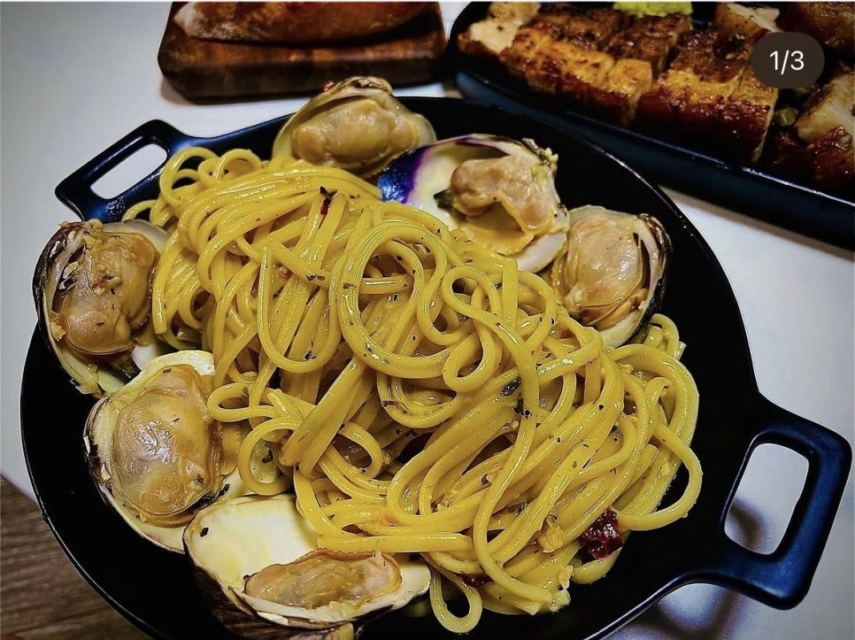
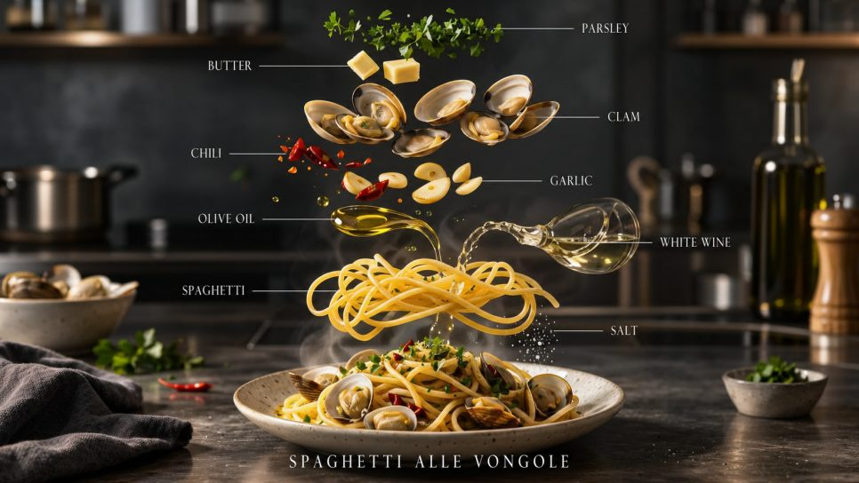

양식 · 10분 · 난이도 중
바지락 듬뿍 봉골레 파스타
봉골레는 재료가 단순해서 오히려 기본기가 드러나는 파스타예요.

- Time
- 10분
- Difficulty
- 중
- Serves
- 1인분
- Equipment
- 1구 인덕션
봉골레는 재료가 단순해서 오히려 기본기가 드러나는 파스타예요. 바지락이 입을 벌리면서 나오는 조개 육수와 면수, 올리브유가 하나로 섞여야 소스가 면에 착 달라붙어요. 이걸 이탈리아에서는 '만테카레'라고 부르는데, 사실 팬을 힘차게 흔드는 게 전부예요.
Méthode
- 바지락은 소금물(물 1L + 소금 2큰술)에 담가 검은 비닐을 덮고 1시간 해감한 뒤, 껍데기끼리 비벼 씻어요.
- 물 1L에 소금 1큰술을 넣고 면을 포장지 시간보다 2분 짧게 삶아요. 면수 한 컵을 남겨둬요.
- 팬에 올리브유와 편 썬 마늘을 넣고 약불에서 천천히 가열해 마늘이 연한 갈색이 될 때까지 향을 내요. 페페론치노를 부숴 넣어요.
- 바지락과 화이트와인을 넣고 뚜껑을 덮어 센 불로 2분, 바지락이 입을 열 때까지 익혀요.
- 면과 면수 4~5큰술을 넣고 팬을 힘차게 흔들며 1~2분 졸여요. 국물이 뽀얗게 유화되면 성공이에요.
- 불을 끄고 버터와 다진 파슬리를 넣어 한 번 더 섞은 뒤, 마지막에 올리브유를 한 바퀴 둘러 마무리해요.
Chef's Note — 원룸 팁
바지락이 짜기 때문에 소금 간은 마지막에 맛을 보고 하세요. 대부분 추가 간이 필요 없어요.
끝까지 입을 열지 않는 바지락은 상한 것일 수 있으니 골라내세요.
해감만 미리 해두면 조리는 15분이면 끝나요. 국물까지 빵에 찍어 먹고 싶어지는 맛이라, 바게트 한 조각 곁들이는 걸 추천해요.
